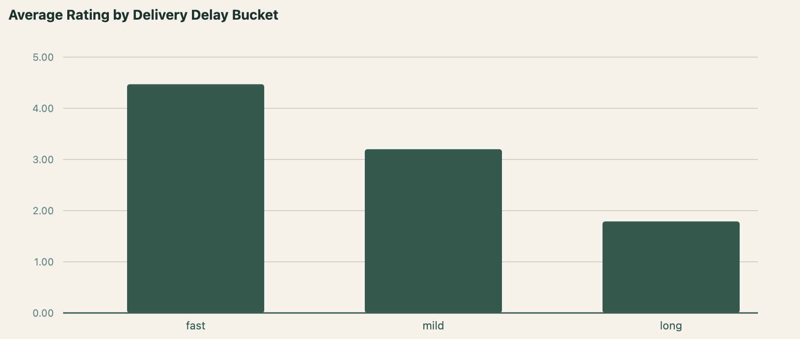
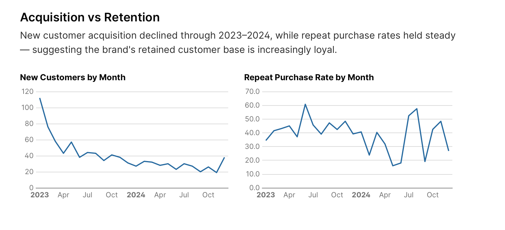
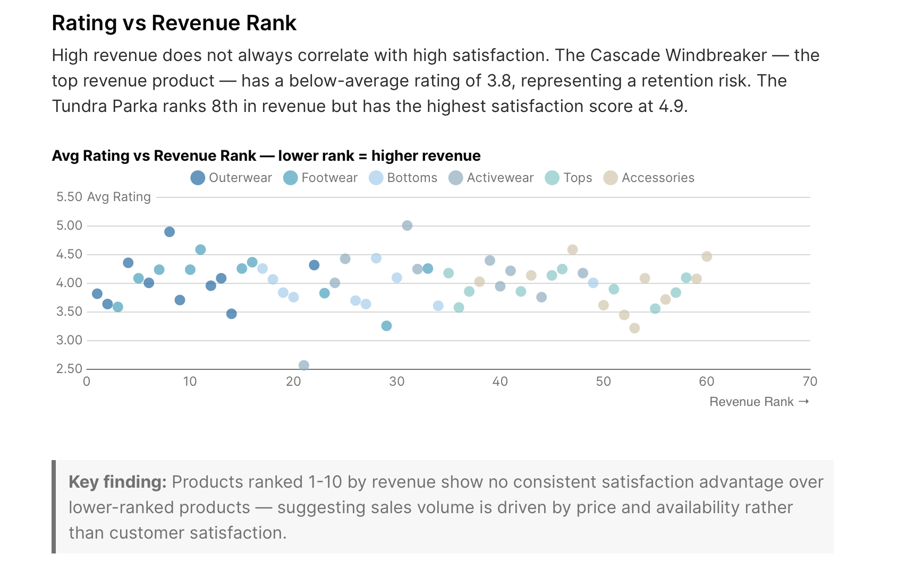

Raw transactional data answers one question: what happened? Dimensional modeling answers the ones that actually matter — who bought, what they bought, when they came back, and why they didn't.
This project builds the analytics layer that sits between raw data and business decisions: clean, tested, documented dbt models on DuckDB, surfaced through a dashboard that makes those answers accessible to anyone on the team — not just the analyst who wrote the SQL.
What I built
SV8 Athletics is a simulated DTC apparel brand — built to mirror the data infrastructure a real company like Lululemon or Arc'teryx would run. The project covers the full analytics engineering lifecycle: retail data generated to match Shopify's schema, a dlt ingestion pipeline landing data into DuckDB, 22 dbt models across staging, intermediate, and mart layers, and an Evidence.dev dashboard serving three business domains — customer retention, product performance, and fulfillment experience.
Architecture
The pipeline follows a modern ELT pattern — load first, transform in the warehouse — across four distinct layers.
Data Generation
Retail data generated using Python and Faker, modeled on Shopify's Admin API schema. 1,000 customers, 2,273 orders, 60 products across 6 apparel categories, and 900 reviews with correlated delivery delay and satisfaction data — designed to simulate realistic retail behaviour including power-law order frequency distributions and seasonal patterns.
Ingestion
A dlt pipeline reads the generated CSVs and loads them into DuckDB under a raw schema. dlt handles schema inference, type casting, and write disposition — the same connector pattern works against a live Shopify API in production.
Transformation
dbt Core handles all transformation logic across three layers:
Staging — one model per source table, cleaning and typing raw data. 67 data quality tests covering uniqueness, nullability, referential integrity, and accepted values.
Intermediate — four models applying joins and business logic: enriched orders (recognized revenue, cancellation flags), customer order history (cohort dates, days to second order), product metrics (revenue and qty by month), and enriched reviews (delivery delay buckets).
Marts — 12 models across three business domains, each designed around a specific team's recurring questions.
Reporting
Evidence.dev connects directly to the mart layer, serving three dashboard pages with 15+ charts across customer retention, product performance, and fulfillment experience.
Click to expand · raw sources → staging → intermediate → marts · 22 models
Key modeling decisions
Grain-first design — Every fact table grain declared upfront (one row per order, line item, review) before writing a single model. Prevents fan-out and double-counting downstream.
LEFT JOINs everywhere — Intermediate models use LEFT JOINs so data problems surface as NULLs instead of silently dropping rows. Caught by downstream tests.
Recognized revenue — Cancellations contribute $0, refunds contribute negative revenue. Business logic is explicit in the model, not buried in dashboard filters.
Audience-oriented marts — Mart folders map to teams: retention (growth), product performance (merchandising), fulfillment (ops). No monolithic mart serving every question at the wrong grain.
Fixed churn horizon — Churn = no order in 90 days, anchored to dataset end date 2024-12-31. Documented in schema.yml; production version uses CURRENT_DATE.
What the data revealed
Fulfillment speed drives satisfaction more than anything else
Orders delivered within 5 days averaged 4.47★. Beyond 10 days: 1.79★ — a 60% drop. Fulfillment SLAs are a retention lever, not just an ops metric.

Acquisition is declining; loyalty is holding
New customer acquisition fell through 2023–2024 while repeat purchase rates held at 35–45%. The data points to a top-of-funnel gap, not a retention problem.

High revenue ≠ high satisfaction
Top revenue product (Cascade Windbreaker) carries a 3.8 rating. 8th-ranked Tundra Parka scores 4.9. Revenue concentrated in dissatisfied customers is a silent churn risk.

If this were production
Incremental models — All models run full refresh. At scale, fct_orders and fct_reviews would be incremental with a watermark on updated_at.
Type 2 SCDs — Customer and product dims are snapshot-only. Production needs SCD2 to answer historical questions accurately.
Orchestration — Airflow or Dagster would own the ingestion → dbt → test → alert DAG on a schedule.
Data contracts — 67 schema tests are a floor. Production adds anomaly detection, freshness SLAs, and PagerDuty-level alerting.